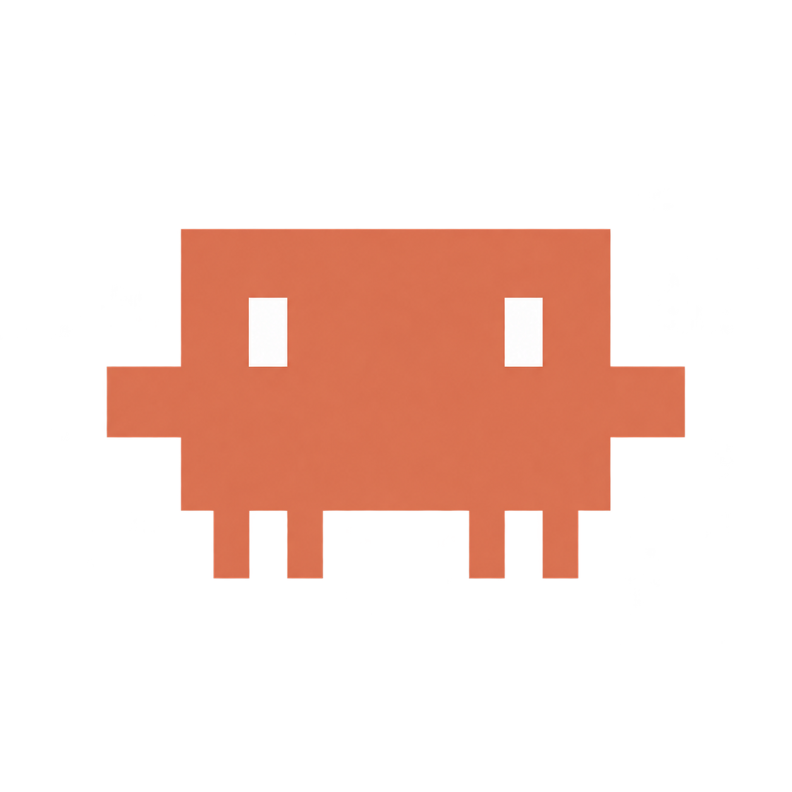
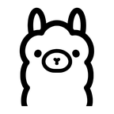
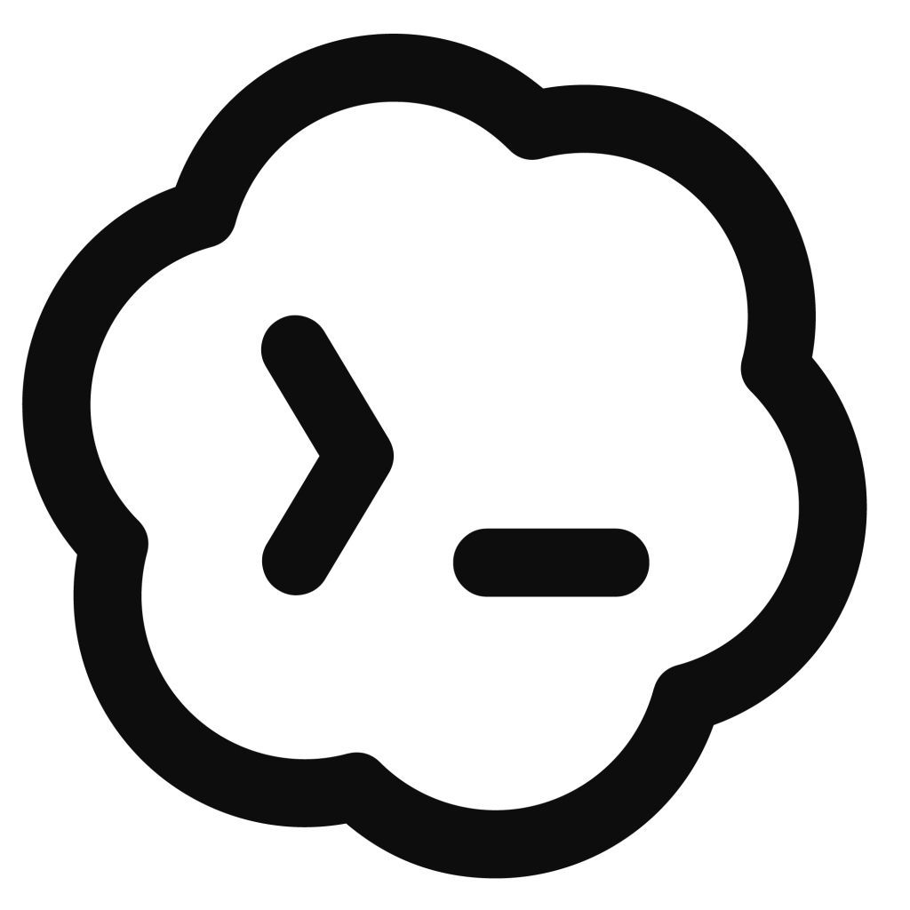
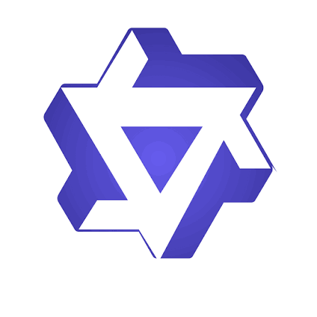

A C2 framework I wrote
The first rule alone is noise. The frequency rule is the one that means something.
Purple team and detection engineering
Explore the samples →The first rule alone is noise. The frequency rule is the one that means something.
I proposed a SOC, the head of IT approved it, and I built it and ran it until the internship ended.
The part of security I actually enjoy is purple team work. I build my own tooling — a C2 framework and malware samples — detonate it in an isolated lab, watch what the sensors pick up and what they miss, and turn the gap into a detection rule.
I spent my internship at Palmgold Management building and running their SOC, which gave me somewhere real to test all of this. I’m in my final year of a Computer Science (Cyber Security) degree at Asia Pacific University.
Build my own tooling
Detonate it in an isolated lab
Watch what the sensors miss
Turn the gap into a detection rule
I run both sides: write the attack, then go and catch it. Writing the tooling myself is the only way I trust what a rule is really matching on.
I built my own command-and-control framework in Python rather than picking one off the shelf, so I know exactly what it does on the wire and on the host. The operator console has its own commands — list the agents that have checked in, open a shell, pull a file, run a recursive scan for interesting files.
Watching that beacon arrive in Wazuh is how I wrote the detection for it. One rule notices a single outbound connection to the tunnel edge. A second says that six of them in a minute from the same source address is a pattern, not a coincidence.
I mapped it to the ATT&CK techniques for a command-and-control channel over a web protocol, so it lines up with the rest of the coverage.
The first rule alone is noise. The frequency rule is the one that means something.
Six sample events · accelerated playback
Sixth in the window: Potential beacon: repeated outbound SSL
Each one follows the same path: I run it as the attacker, watch what the sensors see, and turn the gap into a rule. Red is what I did, blue is what the defence recorded, purple is what came out of it.
Network & Security Administrator intern, Palmgold Management Sdn Bhd, May to August 2026. When I started, the company had no security monitoring. I proposed a SOC, the head of IT approved it, and I built it and ran it until the internship ended.
Tools and skills I have used on real systems, not just read about. Skills with a dot show the line on this page where I used them, with a link to it.
Build the attack, then catch it. Writing my own samples and C2 is how I know a rule fires on behaviour, not on one artefact.
Where most of my time went: getting the data in, then writing rules that fire on behaviour, not on one sample.
I ship real applications, not just scripts. A live booth operations system for a client runs on this stack.
The infrastructure the monitoring sits on, most of which I set up myself.
What I reach for depends on the job. Rust and C++ for samples, Python for tooling and automation.
Ezforge run retail booths at shopping centres. The owner was tracking sales, staff rosters and pay by hand across several booths at once, so I built her a web application that runs the whole operation in one place. It has been live since September 2026 and she uses it to run the business.

Claude CodeAnthropic’s coding agent
OllamaRuns language models locally
CodexKiro
QwenKaggle & Google ColabAI is moving fast, and I’ll keep up with it as it changes. Getting hands on with this now, while it is all still moving, has been one of the most valuable parts of the internship for me. I plan to keep trying each new tool on real work, to see where it helps and where it gets things wrong.
At the SOC I put Claude in the analyst seat to watch the C2 activity in Wazuh with me, then wrote the detection rules for that signature.
I also use Kaggle and Google Colab to run models such as Qwen for experiments.
I’m in my final year of a BSc in Computer Science (Cyber Security) at Asia Pacific University. The internship was the steepest learning curve I’ve had so far, and it settled what I want to do next.
I’d like to join a team doing purple team work properly, where I can keep building tooling and samples and finding out what the rules miss, and learn from people who have done this at a bigger scale.
If you’re hiring for purple team, detection engineering or a SOC role, I’d be glad to talk through any of this.
I’m especially interested in malware development, research and analysis.